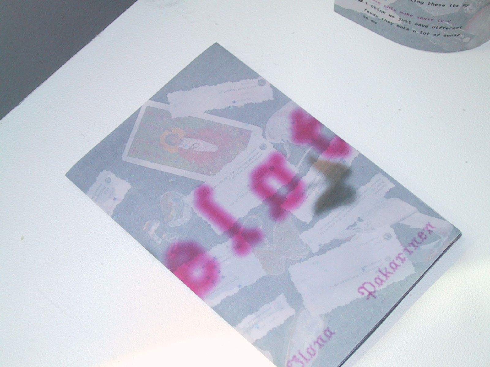
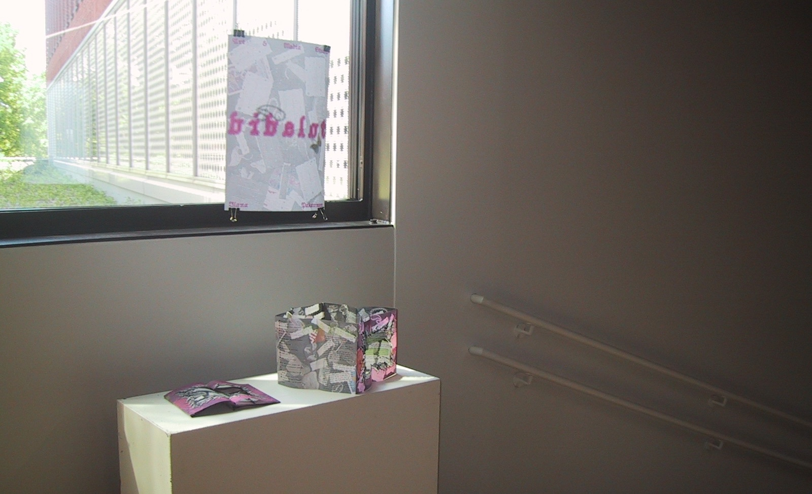
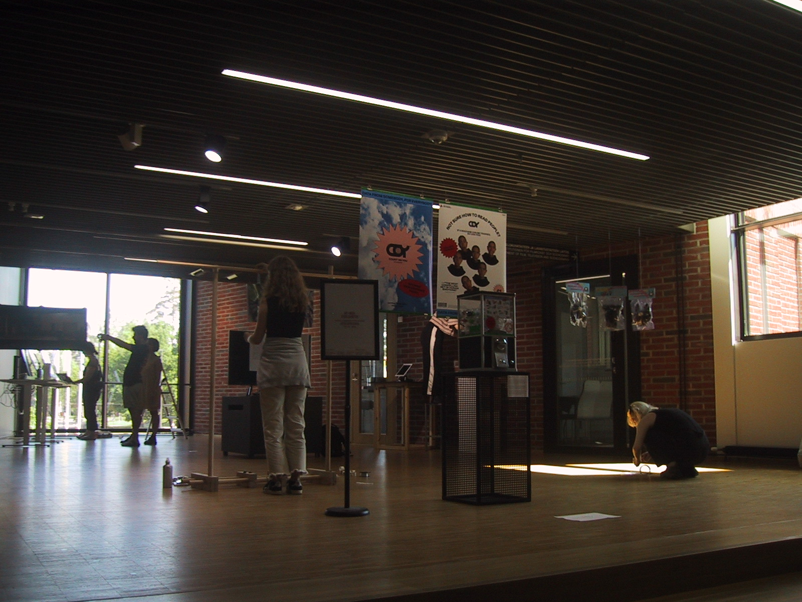
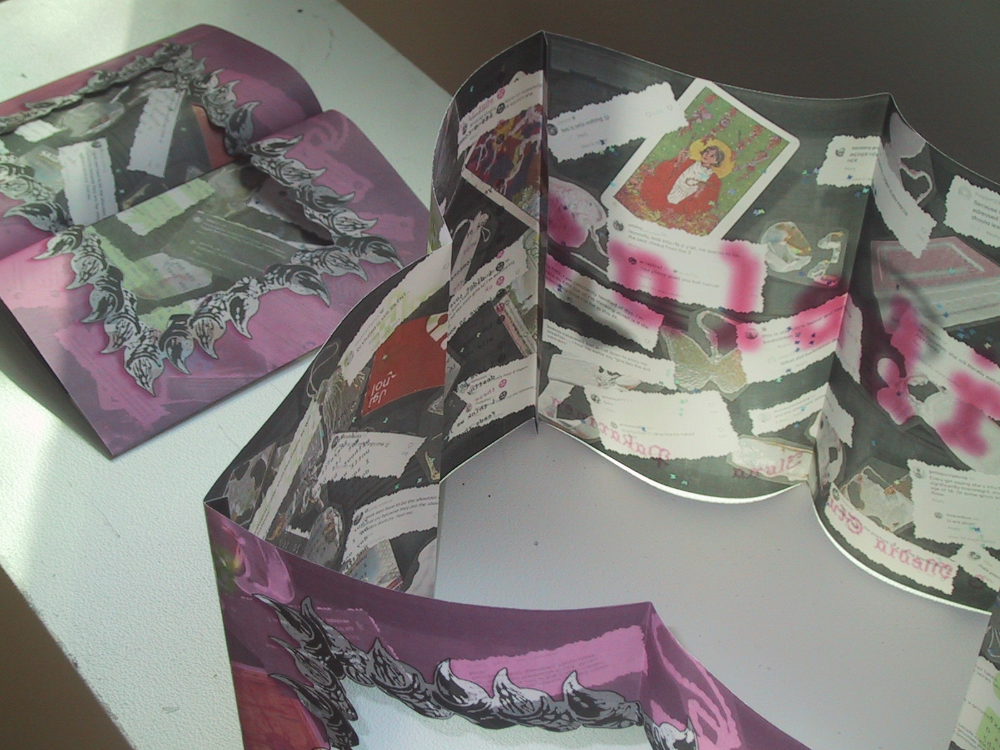
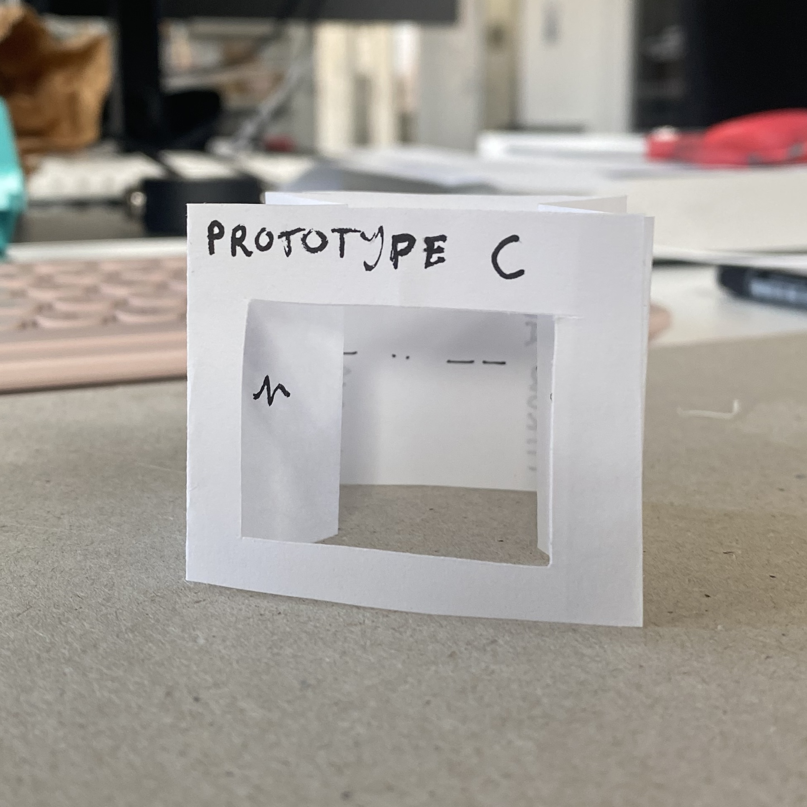

GRAPHIC DESIGN & PRINT
bibelot

A non-linear zine questioning the nature of a personalised social media feed. The project aimed to experiment with unconventional interaction methods with print. Through the use of cutouts and two folding methods, the reader is encouraged to explore the narrative of the zine in a non-linear way.
Jan – May 2024 // DATE
Table top & 3D Scanning // MEDIUM
Art Direction, Print Design, 3D Scanning // ROLES
EXHIBIT



PROCESS
